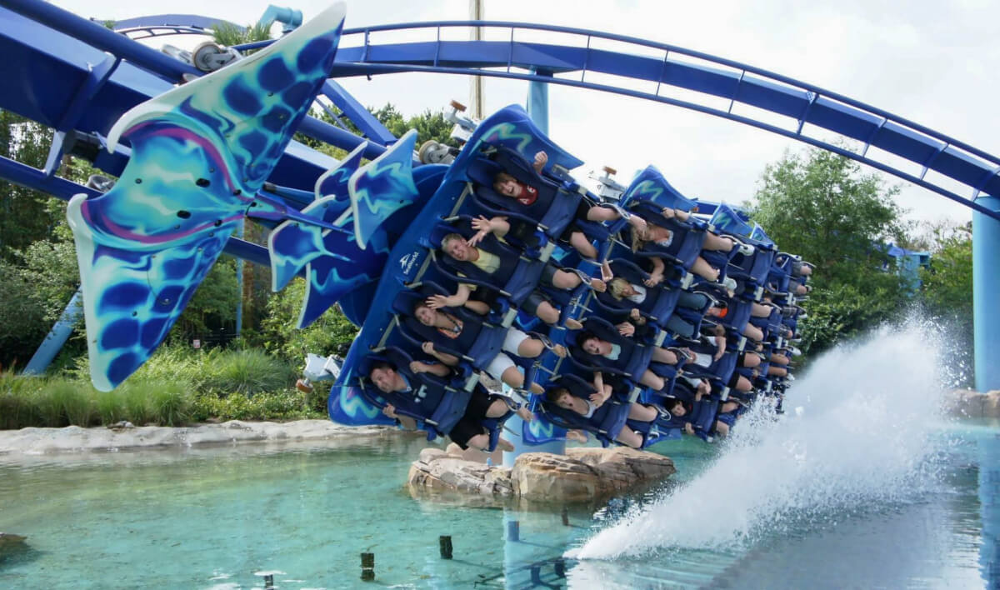
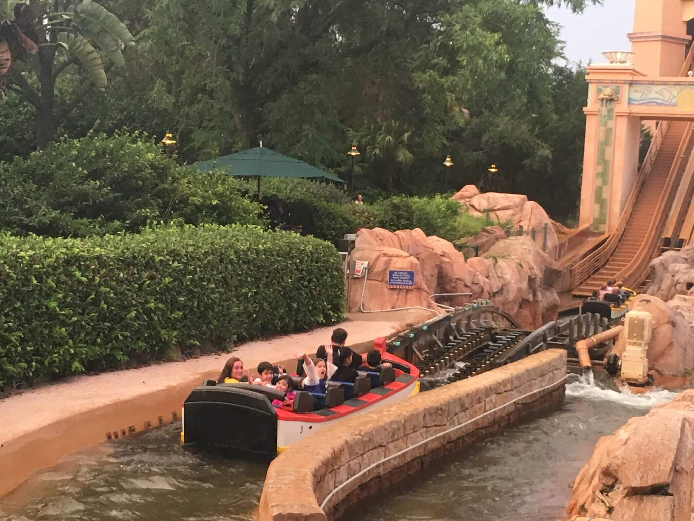
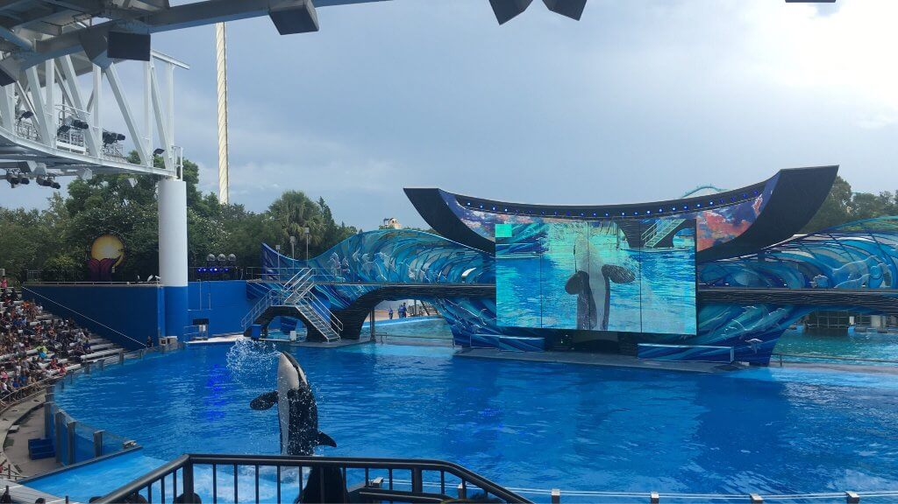
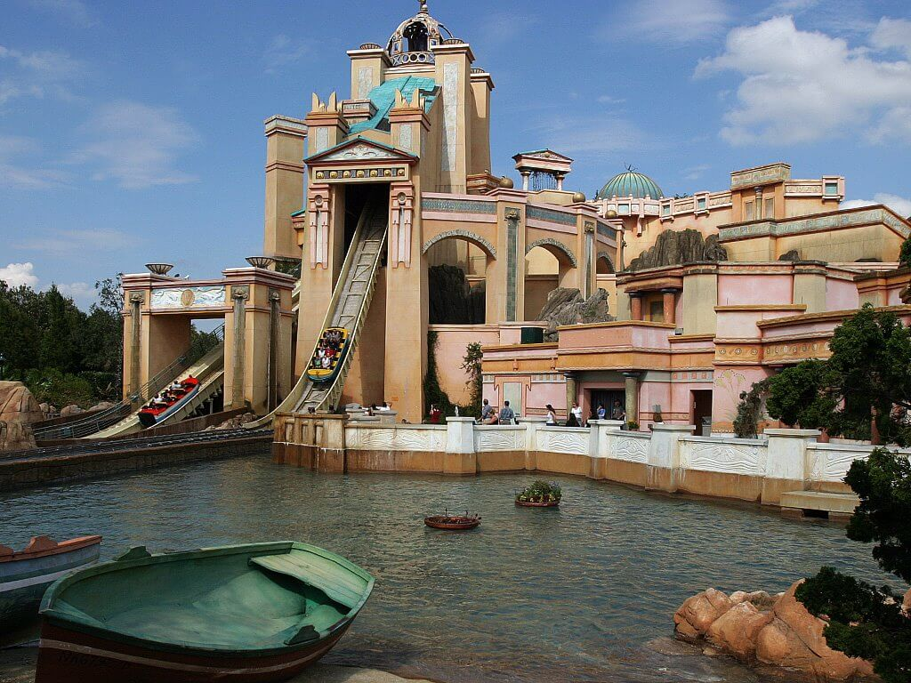
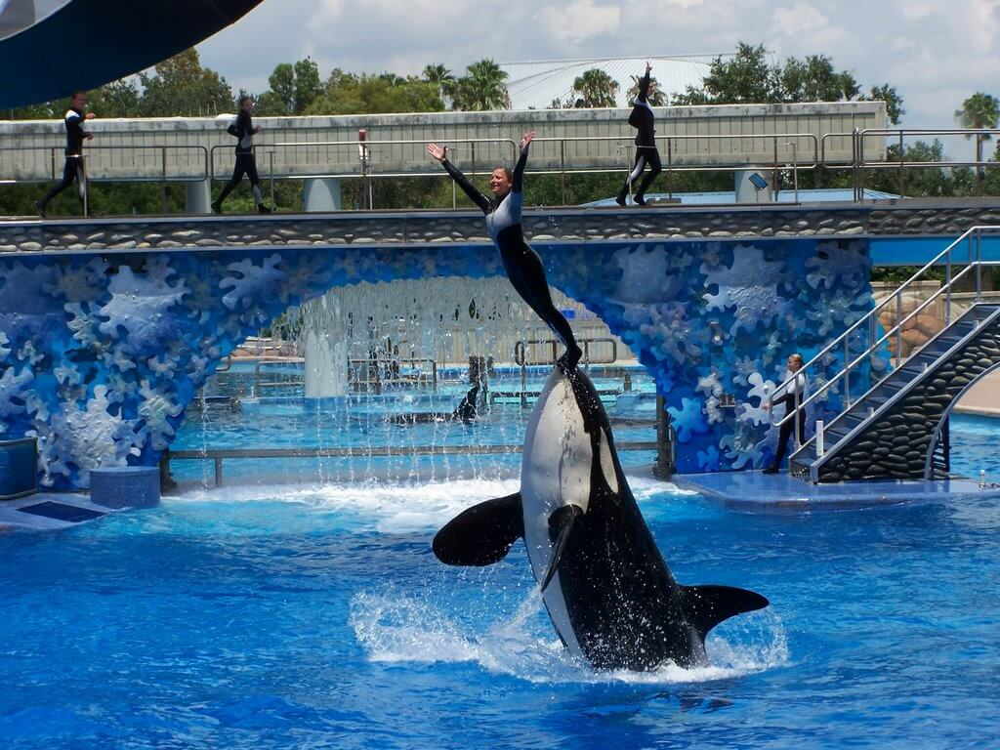

SeaWorld в Орландо – это не просто гигантский океанариум, но и целый парк с неимоверным числом разнообразных аттракционов и шоу, где главные актеры - морские животные. Парк Си-Уорлд признан самым именитым морским парком развлечений, благодаря десяткам бассейнов всевозможных тематик и огромному прозрачному аквариуму-туннелю.

Здесь вы увидите уникальные шоу с морскими львами, касатками, котиками и дельфинами. Причем в океанариуме выращивают и дрессируют настоящих актеров – морские обитатели снимаются во многих голливудских кинолентах. В поразительных по размерам аквариумах также обитают ламантины – морские коровы и свирепые хищники – скаты, акулы, рыба-пила.
Головокружительные аттракционы на тему Атлантиды и Арктики также приводят в восторг как маленьких, так и взрослых посетителей. Уйма познавательной информации подготовлено для туристов о морских обитателях и морях, о животном мире и океанах. И все это в зрелищной и доступной форме. Розовые фламинго, морские черепахи, аллигаторы, морские котики и множество тропических рыб всяческих форм, размеров и цветов увлекают гостей парка.

Практически 3 миллиона литров соленой воды вмещает огромный аквариум. Ну и конечно, здесь предоставляется возможность поплавать с дельфинами и покормить акул.

Любителям острых ощущений понравится «Кракен», выполненный в морском стиле (те же американские горки со множеством мёртвых петель). Но не следует переживать за безопасность, современное оборудование и надежное крепление не даст получить травм.


ВВЕРХ